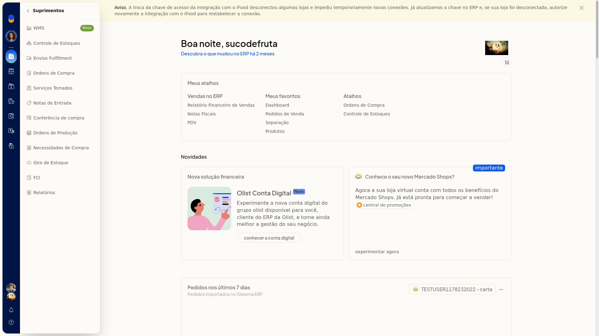

Controle de estoques
No ERP da Olist, o controle de estoques mostra o saldo dos produtos no depósito escolhido: estoque físico, estoque reservado e estoque disponível. Em Suprimentos > Controle de Estoques, você consulta esses saldos, busca produtos e alterna a lista por tipo.
Pré-requisitos
- Depósitos já cadastrados na conta. O seletor lista os depósitos cadastrados.
Instruções
-
No menu lateral, clique em Suprimentos.

-
Clique em Controle de Estoques.

-
Busque o produto e selecione a aba Todos, Simples, Kits, Fabricado ou Matéria-prima. A lista do depósito selecionado mostra Estoque físico, Estoque reservado e Estoque disponível.
Resultado
A grade de Controle de Estoques exibe o saldo físico, reservado e disponível dos produtos no depósito escolhido.
Informações adicionais
A lista também traz as colunas Produto, Código (SKU), Preço, Custo médio, Unidade e Localização.
Na mesma tela aparecem Inventário de estoque, Transferir entre depósitos, Gerenciar produtos e Mais ações, com Imprimir relatório.